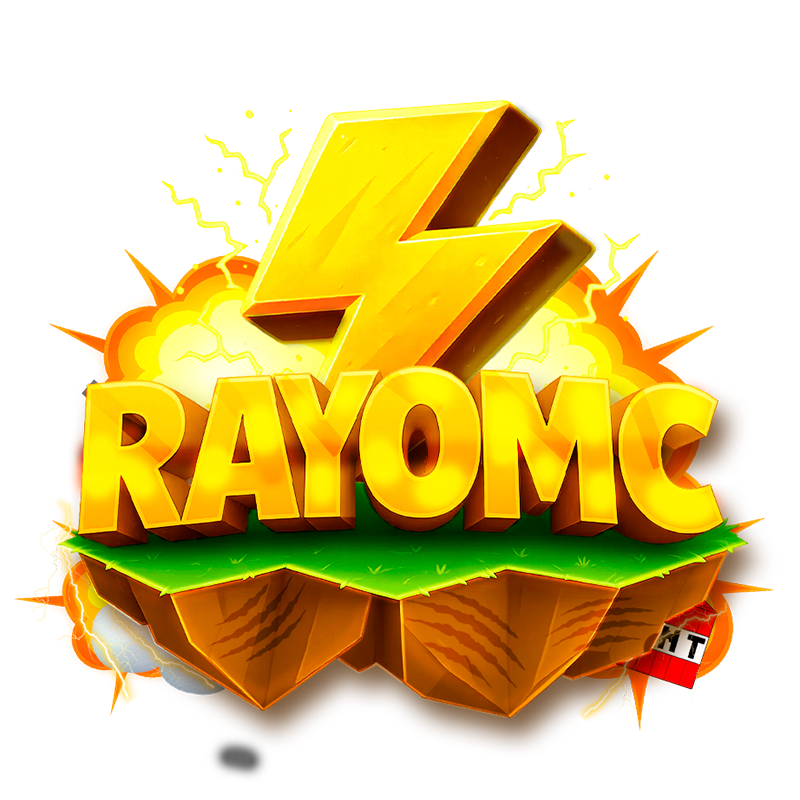

RayoMc
Actual2025 – Presente
Desarrollo de plugins personalizados de cosméticos, corrección de bugs, optimización de modalidades existentes y creación de una modalidad nueva desde cero.
«Me gustó mucho el servicio. Pedí un plugin personalizado de cosméticos, el tiempo de entrega fue rápido, muy buena atención, en todo momento hizo caso a mis indicaciones. Sin duda, el mejor. 10/10.» — Iwidayo, Dueño de RayoMc